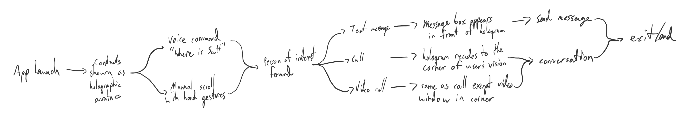

HoloLens Messenger
Overview
Messaging apps are a staple of mobile devices. The layout and experience that is offered is consistent across phones and tablets, but what about the holographic space that devices like the HoloLens utilize? How would a messaging app use real space?
Why do this?
I originally thought of this app when I attended a talk on campus about interaction paradigms and idioms and how they have changed over time. After the talk there was time set aside for a workshop period to create our own design paradigms/idioms. I have been infatuated with the HoloLens since its reveal, so I decided to create something for the unique space it provided.
The Process
When mapping out the basic functions that a user could perform, I had to think about where holograms would be placed in the environment. The placement of holograms had to make sense based on the action being performed. The user's vision can have a different focus based on the action being performed, so placement of holograms should reflect this placement of focus.
My Solution
In the above prototype, ui and holographic elements are placed in areas that reflect where the user's visual attention is focused. For a text message, the writing is the focus, so the hologram is front and center. For a call, vision isn't necessarily the focus, so the ui elements are off in the corner. For a video call, the video feed is in the center, but can be moved off to the side if needed.